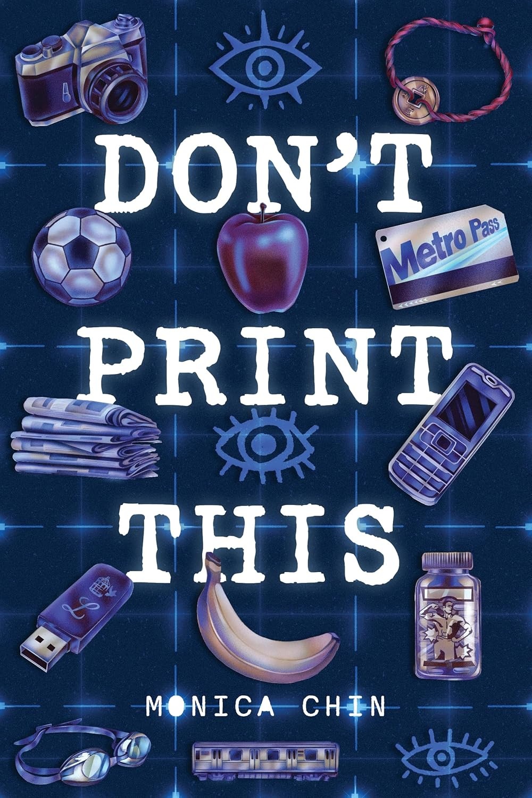

Freshman year, Ace Li kissed his best friend, Akash Patel. The next day, Akash moved away without a word—and Ace was so brokenhearted he stopped eating.
It took years for Ace to recover, but he's finally stable again. Ace drinks his protein shakes, swims every morning, and might even win the debate competition this year. He's good. He's forgotten that kiss—at least, that's what he tells himself. Then Ace hears the news: Akash is back.
Akash has returned because his mother, the world-famous investigative journalist Radhika Malhotra, is missing, and she was last seen in this town. Ace tries to stay away, but the second he sees Akash, the feelings he's suppressed bubble back to the surface. Then Ace happens upon some notes—notes about what Akash's mother was investigating. If he retraces her steps, he might be able to find her. And if he does, maybe Akash will give him another chance.
As Ace follows Radhika's trail, his stable life begins to crumble. He stops eating, and he starts receiving threatening, anonymous messages. If he goes public with what happened to Radhika and why, his entire town will have to pay the consequences. Winning Akash's heart might cost Ace everything, but maybe that's a sacrifice he's willing to make.

Also available as an ebook. Ask for it at your local independent bookstore.
"An incredible debut novel that's an aching tribute to friendship, found family, and coming of age, hung on the bones of obsession and a good old-fashioned murder mystery."
"A whodunnit with striking depth. You'll read for the answers and remember the heart."
"A classic whodunit for people who enjoy diverse representation and character-driven fiction."
Holly Jackson meets Heartstopper in this emotional mystery. While you wait for the September release, here's a playlist of the songs that inspired my work and helped me build the story.
This book contains depictions of the death of a parent, disordered eating, drug use, and fatphobia.